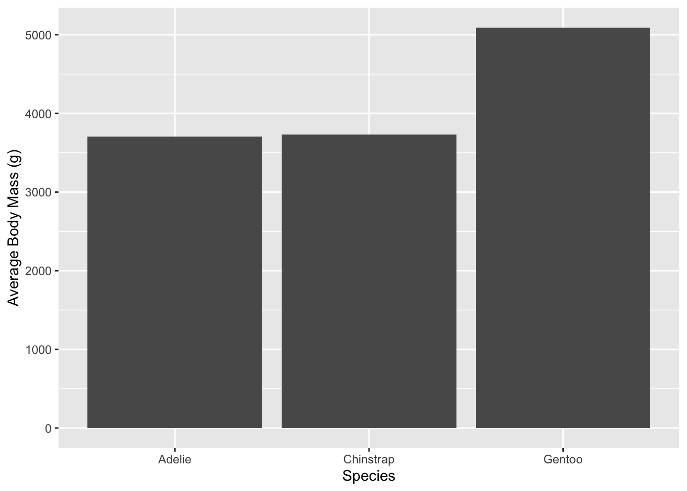

library(palmerpenguins)
library(tidyverse)Palmer Penguins for R
Analysis for R
Data
Data: Palmer Penguins, Palmer Station Antarctica LTER.
Installation of Libraries
Exploring the Data
penguins_data <- penguins
head(penguins_data)# A tibble: 6 × 8
species island bill_length_mm bill_depth_mm flipper_length_mm body_mass_g
<fct> <fct> <dbl> <dbl> <int> <int>
1 Adelie Torgersen 39.1 18.7 181 3750
2 Adelie Torgersen 39.5 17.4 186 3800
3 Adelie Torgersen 40.3 18 195 3250
4 Adelie Torgersen NA NA NA NA
5 Adelie Torgersen 36.7 19.3 193 3450
6 Adelie Torgersen 39.3 20.6 190 3650
# ℹ 2 more variables: sex <fct>, year <int>Data Wrangling
Let’s remove all the empty NA values.
penguins_data <- penguins_data |>
drop_na()
head(penguins_data)# A tibble: 6 × 8
species island bill_length_mm bill_depth_mm flipper_length_mm body_mass_g
<fct> <fct> <dbl> <dbl> <int> <int>
1 Adelie Torgersen 39.1 18.7 181 3750
2 Adelie Torgersen 39.5 17.4 186 3800
3 Adelie Torgersen 40.3 18 195 3250
4 Adelie Torgersen 36.7 19.3 193 3450
5 Adelie Torgersen 39.3 20.6 190 3650
6 Adelie Torgersen 38.9 17.8 181 3625
# ℹ 2 more variables: sex <fct>, year <int>Why don’t we sort the rows based on decreasing value of body mass?
penguins_data <- penguins_data |>
arrange(desc(body_mass_g))
head(penguins_data)# A tibble: 6 × 8
species island bill_length_mm bill_depth_mm flipper_length_mm body_mass_g
<fct> <fct> <dbl> <dbl> <int> <int>
1 Gentoo Biscoe 49.2 15.2 221 6300
2 Gentoo Biscoe 59.6 17 230 6050
3 Gentoo Biscoe 51.1 16.3 220 6000
4 Gentoo Biscoe 48.8 16.2 222 6000
5 Gentoo Biscoe 45.2 16.4 223 5950
6 Gentoo Biscoe 49.8 15.9 229 5950
# ℹ 2 more variables: sex <fct>, year <int>How does average body mass differ between species?
penguins_data <- penguins_data |>
group_by(species) |>
summarise(mean_body_mass = mean(body_mass_g)) |>
arrange(desc(mean_body_mass))
penguins_data# A tibble: 3 × 2
species mean_body_mass
<fct> <dbl>
1 Gentoo 5092.
2 Chinstrap 3733.
3 Adelie 3706.Data Visualisation
ggplot(penguins_data, aes(x = species, y = mean_body_mass)) +
geom_col() +
labs(
x = "Species",
y = "Average Body Mass (g)"
)
What I have Done
Dataset: I chose the Palmer Penguins dataset, which contains information about penguins observed at Palmer Station in Antarctica. The dataset includes measurements such as species, island, bill length, bill depth, flipper length, body mass, sex, and year. I used this dataset to explore how body mass differs across penguin species.
Discovery: After removing the missing values, I sorted the penguins by body mass and calculated the average body mass for each species. The results show that Gentoo penguins had the highest average body mass at about 5092 g, while Adelie and Chinstrap penguins had similar average body masses of about 3706 g and 3733 g, respectively.